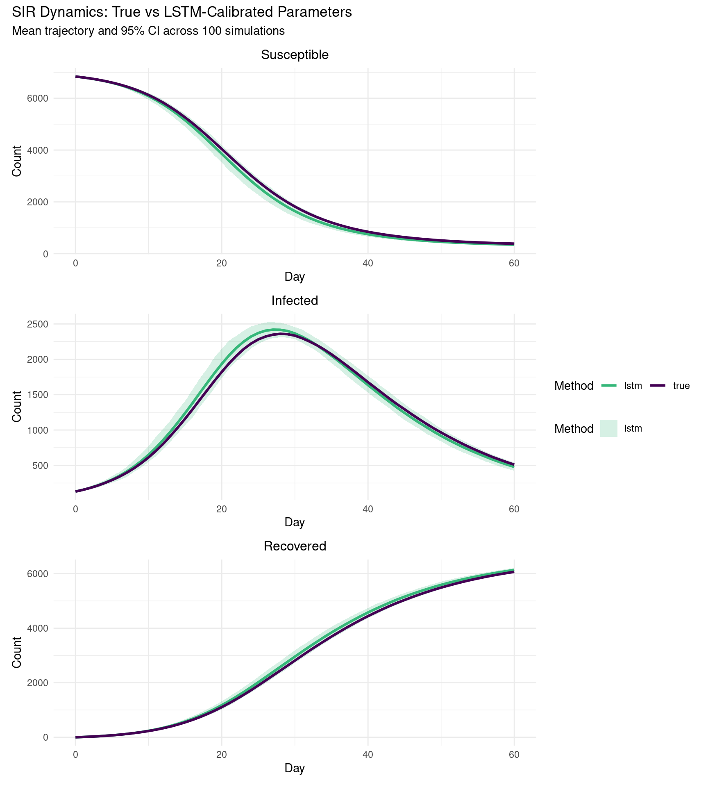

library(tidyverse)
library(ggplot2)
library(patchwork)
library(epiworldR)
library(epiworldRcalibrate)Introduction to LSTM-based Calibration (One-Line Usage)
Overview
This vignette demonstrates the core epiworldRcalibrate workflow: simulate a synthetic epidemic with known parameters, calibrate those parameters back from the incidence curve using calibrate_sir(), and assess how closely the calibrated model reproduces the original dynamics.
Using a synthetic (simulated) epidemic rather than real data is intentional — because the ground-truth parameters are known, we can measure calibration error directly rather than relying on goodness-of-fit alone.
Note
No Python setup required. calibrate_sir() initializes the BiLSTM model internally on first call. If you are running epiworldRcalibrate for the first time on this machine, run setup_python_deps(force=TRUE) once beforehand.
Setup
Simulate a ground-truth epidemic
We draw SIR parameters at random and simulate 60 days of epidemic dynamics. The transmission probability ptran is derived from a randomly drawn R0 via the identity \(\text{ptran} = R_0 \times \text{recov} / \text{crate}\), ensuring internal consistency among the parameters.
The incidence vector must have exactly 61 values (days 0 through 60) — this is the sequence length the BiLSTM was trained on.
set.seed(122)
n_value <- sample(5000:10000, 1)
preval <- runif(1, 0.007, 0.02)
crate <- runif(1, 1, 5)
recov <- runif(1, 0.071, 0.25)
R0_true <- runif(1, 1.1, 5)
ptran <- R0_true * recov / crate
true_params <- tibble(
n = n_value,
prevalence = preval,
contact_rate = crate,
transmission_rate = ptran,
recovery_rate = recov,
R0 = R0_true
)
true_params# A tibble: 1 × 6
n prevalence contact_rate transmission_rate recovery_rate R0
<int> <dbl> <dbl> <dbl> <dbl> <dbl>
1 6967 0.0188 1.76 0.149 0.0783 3.36ndays <- 60
true_model <- ModelSIRCONN(
name = "true_simulation",
n = true_params$n,
prevalence = true_params$prevalence,
contact_rate = true_params$contact_rate,
transmission_rate = true_params$transmission_rate,
recovery_rate = true_params$recovery_rate
)
run(true_model, ndays = ndays)_________________________________________________________________________
|Running the model...
|||||||||||||||||||||||||||||||||||||||||||||||||||||||||||||||||||||||| done.
|incidence_ts <- plot_incidence(true_model, plot = FALSE)[, 1]
stopifnot(length(incidence_ts) == 61)Calibrate with BiLSTM
calibrate_sir() passes the 61-day incidence vector through the pretrained BiLSTM network and returns estimates for ptran, crate, and R0 in a single call. The recovery rate is passed in as a fixed input — consistent with how it was fixed during simulation — so the network only needs to recover two free parameters.
lstm_predictions <- calibrate_sir(
daily_cases = incidence_ts,
population_size = true_params$n,
recovery_rate = true_params$recovery_rate
)Verifying Python packages...[OK] numpy v2.0.2[OK] sklearn v1.6.1[OK] joblib v1.5.0[OK] torch v2.7.0+cu126All required Python packages are ready!BiLSTM model loaded successfully.lstm_predictions ptran crate R0
0.1105276 2.4557295 3.4654543 We build a comparison table to see how far the estimates are from the ground truth:
lstm_params <- tibble(
n = true_params$n,
prevalence = true_params$prevalence,
contact_rate = lstm_predictions[["crate"]],
transmission_rate = lstm_predictions[["ptran"]],
recovery_rate = true_params$recovery_rate,
R0 = lstm_predictions[["R0"]]
)
params_comparison <- bind_rows(
true_params |> mutate(param_type = "true"),
lstm_params |> mutate(param_type = "lstm")
)
params_comparison# A tibble: 2 × 7
n prevalence contact_rate transmission_rate recovery_rate R0 param_type
<int> <dbl> <dbl> <dbl> <dbl> <dbl> <chr>
1 6967 0.0188 1.76 0.149 0.0783 3.36 true
2 6967 0.0188 2.46 0.111 0.0783 3.47 lstm Forward simulations: true vs calibrated
To compare dynamics rather than just parameter values, we run 100 stochastic SIR simulations under each parameter set and compute the mean trajectory with 95% prediction intervals. If the BiLSTM estimate is accurate, the two sets of trajectories should overlap closely.
n_reps <- 100
all_simulation_results <- tibble()
for (i in seq_len(nrow(params_comparison))) {
row <- params_comparison[i, ]
fwd_model <- ModelSIRCONN(
name = paste0("forward_", row$param_type),
n = row$n,
prevalence = row$prevalence,
contact_rate = row$contact_rate,
transmission_rate = row$transmission_rate,
recovery_rate = row$recovery_rate
)
saver <- make_saver("total_hist")
run_multiple(fwd_model, ndays = ndays, nsims = n_reps,
saver = saver, nthreads = 8)
results <- run_multiple_get_results(fwd_model, nthreads = 2)
sim_data <- results$total_hist |>
group_by(date, state) |>
summarize(mean_count = mean(counts),
ci_lower = quantile(counts, 0.025),
ci_upper = quantile(counts, 0.975),
.groups = "drop") |>
mutate(param_type = row$param_type)
all_simulation_results <- bind_rows(all_simulation_results, sim_data)
}Starting multiple runs (100) using 8 thread(s)
_________________________________________________________________________
_________________________________________________________________________
||||||||||||||||||||||||||||||||||||||||||||||||||||||||||||||||||||||||| done.
Starting multiple runs (100) using 8 thread(s)
_________________________________________________________________________
_________________________________________________________________________
||||||||||||||||||||||||||||||||||||||||||||||||||||||||||||||||||||||||| done.method_colors <- c("true" = "#440154FF", "lstm" = "#35B779FF")
sir_panel <- function(data, state_name, title) {
pd <- filter(data, state == state_name)
ggplot(pd, aes(x = date, color = param_type)) +
geom_ribbon(data = filter(pd, param_type == "lstm"),
aes(ymin = ci_lower, ymax = ci_upper, fill = param_type),
alpha = 0.2, color = NA) +
geom_line(aes(y = mean_count), linewidth = 1.1) +
scale_color_manual(values = method_colors) +
scale_fill_manual(values = method_colors) +
labs(title = title, x = "Day", y = "Count", color = "Method", fill = "Method") +
theme_minimal() +
theme(legend.position = "bottom",
plot.title = element_text(size = 12, hjust = 0.5))
}
(sir_panel(all_simulation_results, "Susceptible", "Susceptible") /
sir_panel(all_simulation_results, "Infected", "Infected") /
sir_panel(all_simulation_results, "Recovered", "Recovered")) +
plot_layout(guides = "collect") +
plot_annotation(
title = "SIR Dynamics: True vs LSTM-Calibrated Parameters",
subtitle = paste0("Mean trajectory and 95% CI across ", n_reps, " simulations")
)
Parameter bias
The table below shows the ground-truth values, the BiLSTM estimates, and the absolute bias for each estimated parameter. A bias near zero means the network recovered the true value well; larger bias values indicate where the model struggled, which may reflect the inherent non-identifiability of the SIR system (different combinations of ptran and crate can produce similar incidence curves).
tibble(
Parameter = c("Contact Rate", "Transmission Rate", "R0"),
True = c(true_params$contact_rate,
true_params$transmission_rate,
true_params$R0),
LSTM = c(lstm_params$contact_rate,
lstm_params$transmission_rate,
lstm_params$R0)
) |>
mutate(Bias = round(LSTM - True, 4),
Pct_Err = round((LSTM - True) / True * 100, 1)) |>
knitr::kable(digits = 4,
caption = "BiLSTM parameter estimates vs ground truth",
col.names = c("Parameter", "True", "LSTM",
"Bias", "% Error"))| Parameter | True | LSTM | Bias | % Error |
|---|---|---|---|---|
| Contact Rate | 1.7622 | 2.4557 | 0.6935 | 39.4 |
| Transmission Rate | 0.1493 | 0.1105 | -0.0387 | -26.0 |
| R0 | 3.3584 | 3.4655 | 0.1071 | 3.2 |